← All projects / Project 06
Printmaking · Process exploration
Lost in Time
An exploration of printmaking processes, collage, and layered color.
- Discipline
- Printmaking
- Focus
- Collage, Xerox printing, CMYK color
- Project
- 06 / 06
Overview.
This printmaking exploration combines hands-on processes like collage with digital experimentation through scanning, Xeroxing, and layered CMYK printing. By blending physical and digital techniques, the project explores texture, color, and unexpected visual effects to create dynamic, layered compositions.
The process moves from collecting and arranging physical imagery to digitizing those compositions and separating color into individual printing layers. The final piece brings those experiments together in a tactile, imperfect print that highlights the character of the process.
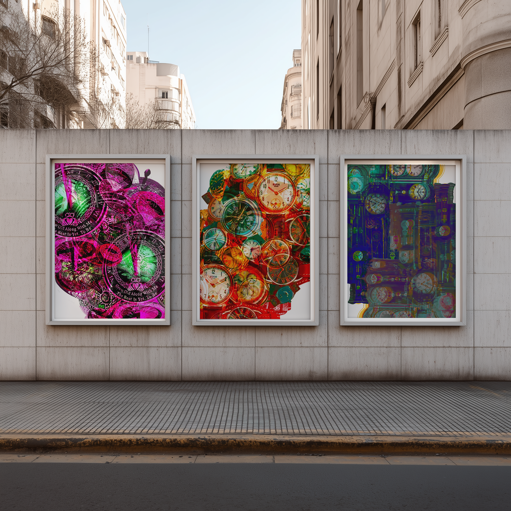
Process:
Collage.
Physical collage provided the foundation for the project. These process photographs document the handmade source material and the arrangement of imagery before it was brought into a digital workflow.
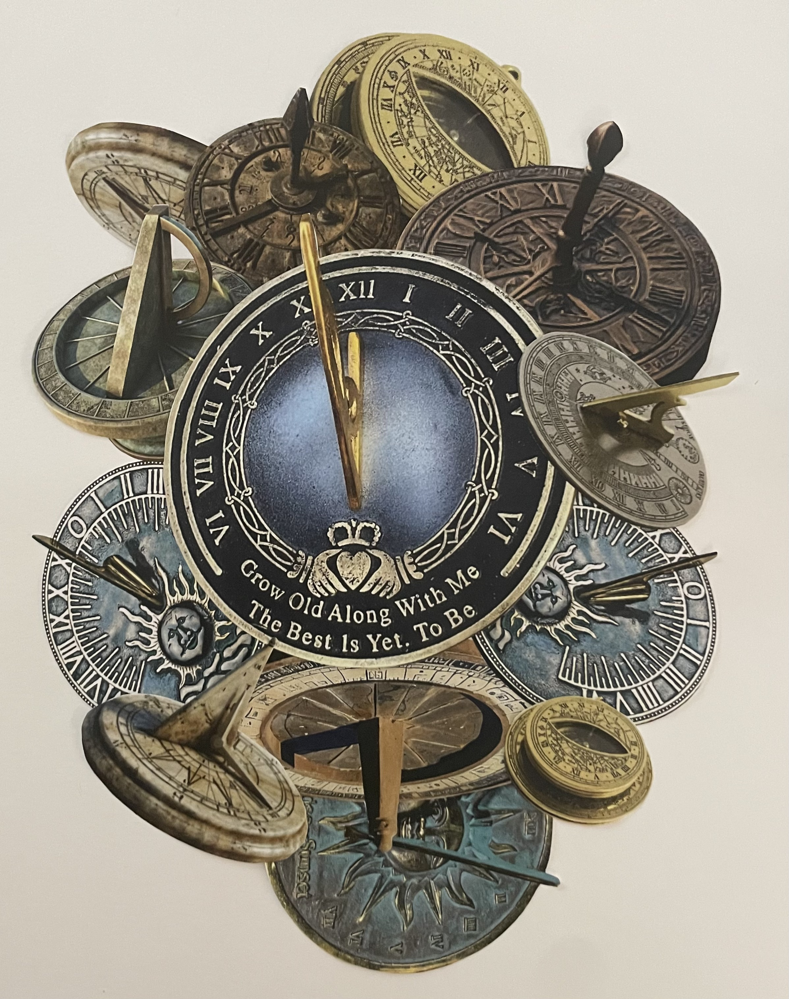
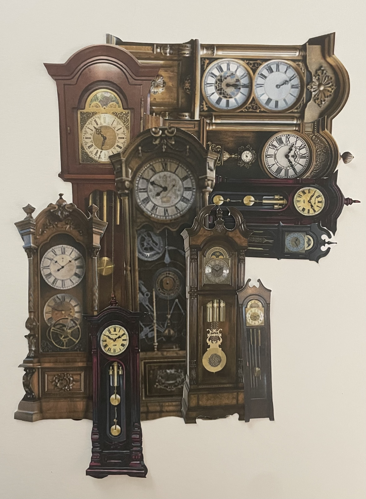
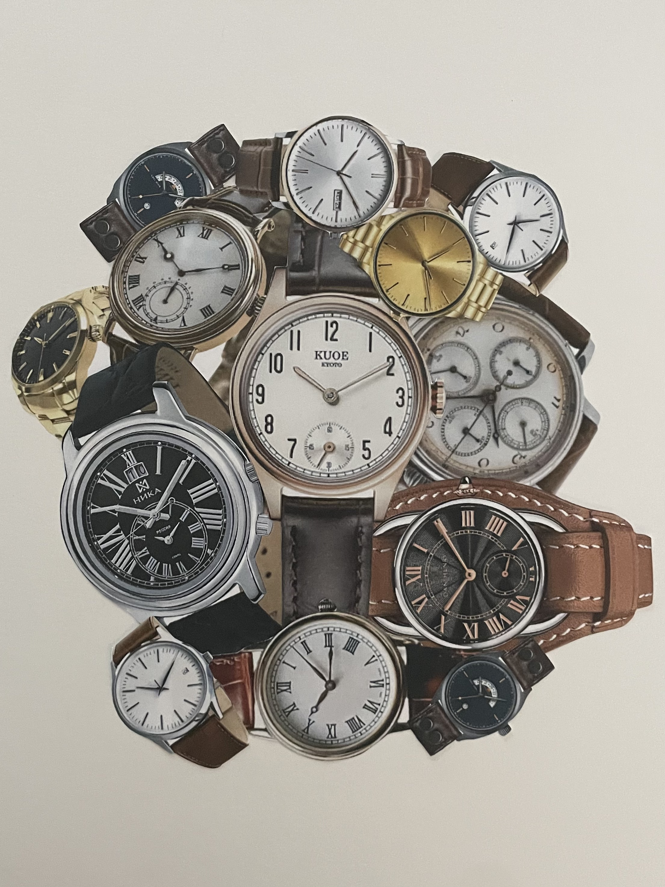
Process:
Digitization.
After creating the physical compositions, I scanned and reproduced the imagery to explore how the source material changed through digitization and Xerox printing. Reproducing the images introduced new textures and tonal shifts while making the artwork ready for color separation and layered printing.

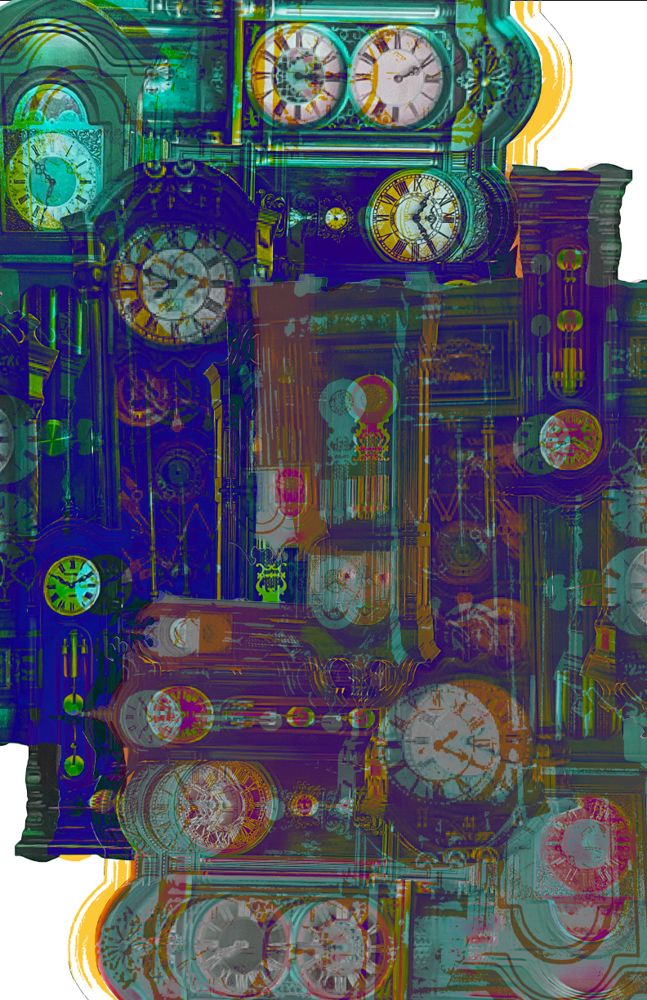
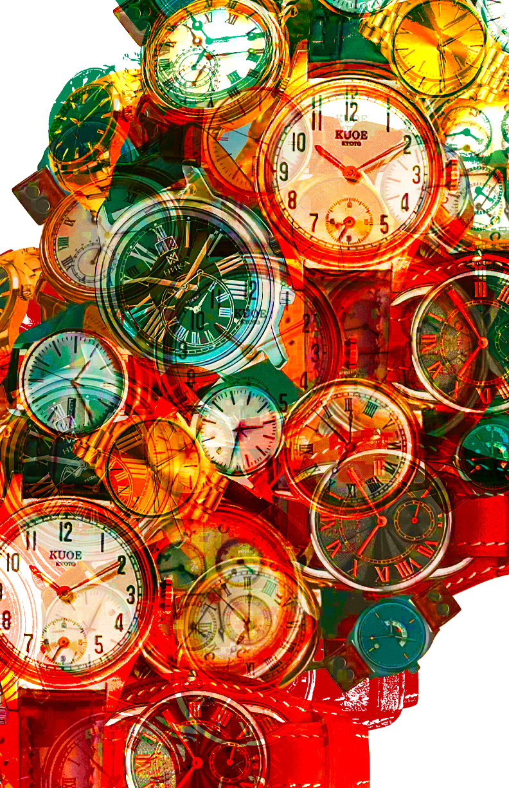
Process:
CMYK Layering.
The selected watch image was separated into cyan, magenta, yellow, and black layers. Working with each color independently made the printing process more deliberate and allowed the image to build through overlapping layers, creating variation in color and texture when combined.
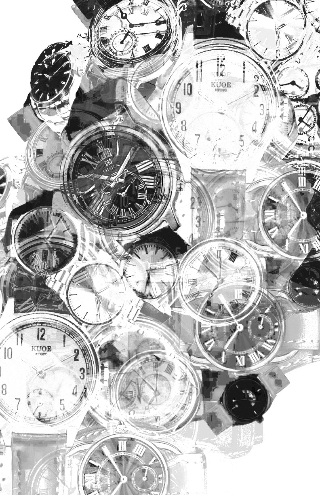
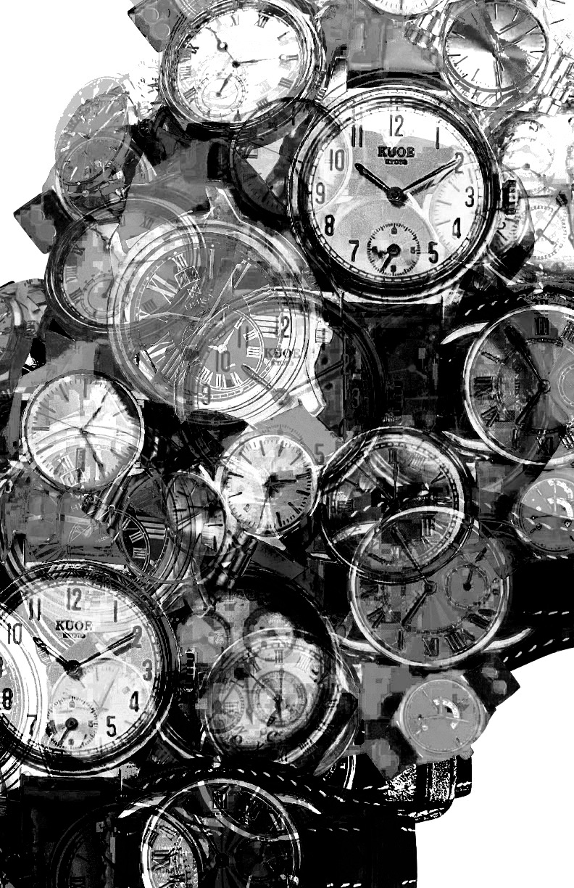
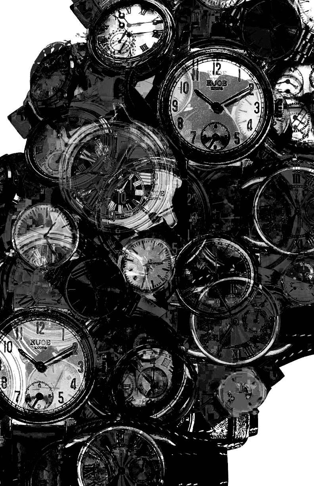
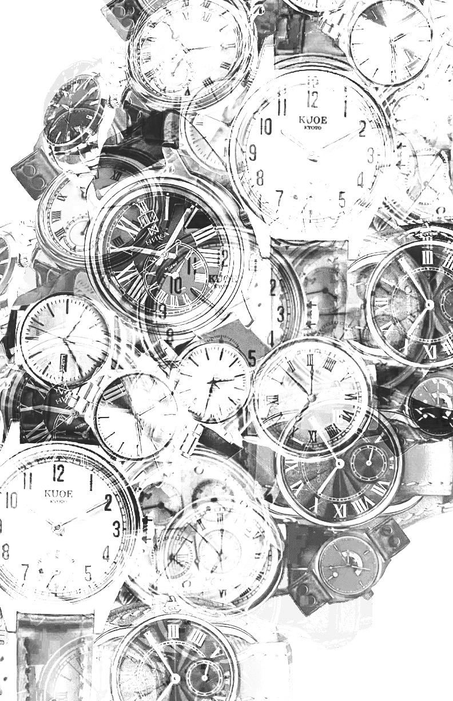
Final
Print.
The final print brings the collage, digitization, and CMYK experiments together in one composition. The layered color and visible print texture preserve the character of the process, showing how physical making and digital preparation can work together to create an image with depth and variation.
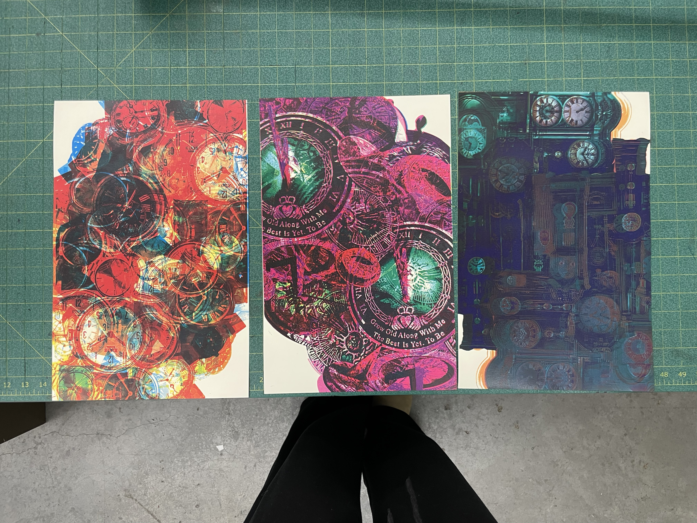
Conclusion.
This project explored how a visual can change as it moves between physical collage, scanning, Xerox reproduction, and layered CMYK printing. Combining these processes made texture and color an active part of the image-making, with each stage contributing something different to the final composition.